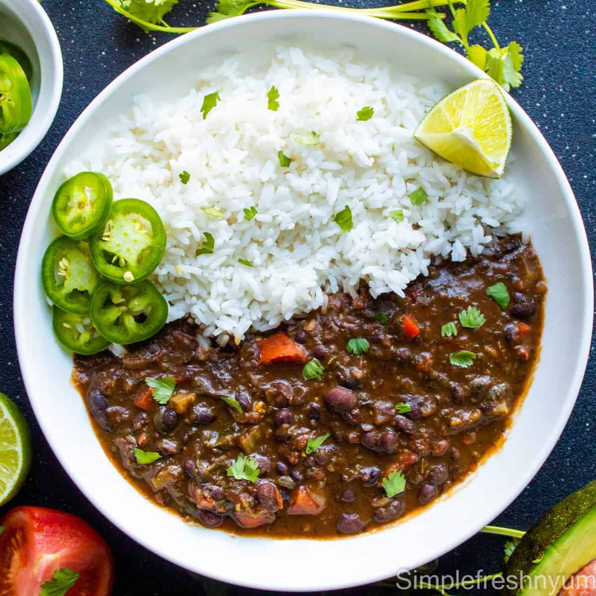

Instant Pot Black Bean Soup
This recipe is not only easy to make in the Instant Pot, but it is also rich in fiber, protein, and other important nutrients. You can adjust the seasonings and spices to your liking, and add more vegetables or meat (if desired). Enjoy!
Ingredients:- 1 lb. dried black beans, rinsed and drained
- 1 large onion, diced
- 3 garlic cloves, minced
- 1 red bell pepper, diced
- 1 green bell pepper, diced
- 2 stalks celery, diced
- 1 tsp. ground cumin
- 1 tsp. chili powder
- 1 tsp. dried oregano
- 4 cups low-sodium vegetable broth
- 1 tbsp. olive oil
- Salt and black pepper to taste
- Fresh cilantro, chopped (optional)
- Instructions:
- Turn on the Instant Pot and select the "Sauté" function. Once hot, add the olive oil, onion, garlic, red and green bell peppers, and celery. Sauté for 2-3 minutes or until the vegetables are tender.
- Add the black beans, cumin, chili powder, and oregano to the Instant Pot. Stir to combine with the vegetables.
- Pour in the vegetable broth and season with salt and black pepper.
- Close the Instant Pot lid and set the pressure release valve to the "Sealing" position. Select the "Manual" or "Pressure Cook" setting and set the cooking time to 30 minutes on high pressure.
- Once the cooking time is up, allow the pressure to release naturally for about 10-15 minutes. Then, carefully release any remaining pressure by turning the pressure release valve to "Venting."
- Open the Instant Pot lid and stir the soup. If you prefer a smoother texture, use an immersion blender to blend the soup until it's smooth.
- Divide the soup into individual meal prep containers. Allow it to cool, then store in the refrigerator for up to 4 days.
- When ready to serve, reheat the soup and garnish with fresh cilantro if desired.